Relatório de Atividade - Redes Neurais Artificiais
David Clifte, Mestrando em Ciências da Computação, IFCE,
I. INTRODUçãO
NESTE trabalho é apresentado o resultado da implementação do Perceptron e do Adaline no Matlab.
Inicialmente é apresentado o Classificador Linear, base do funcionamento para o Perceptron e o Adaline e
então é apresentado os métodos e resultados do trabalho.
Setembro 21,
2014
II. CLASSIfiCADOR LINEAR
Um classificador linear é capaz de dividir duas classes através de uma, reta, plano ou hiperplano, dependendo
do número de dimensões das características. Isso é feito através do valor obtido da combinação linear das
características. Dependendo do valor escalar obtido dessa combinação é feita a decisão de qual classe pertence o
vetor de características ou vetor de entradas.
Uma combinação linear é o resultado do produto de cada termo de um vetor por uma constante e os
resultados são então somados. Como exemplo temos a combinação linear de a × + b ×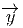 onde a e b são
constantes e 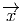 e 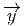 vetores pertencentes ao mesmo espaço vetorial.
Podemos ainda generalizar combinação linear como um produto de matrizes. Dada uma matriz A onde cada
coluna é um vetor que será combinado. Seja C uma matriz com os coeficientes. A combinação linear pode ser
representada como:
+ b ×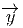 onde a e b são
constantes e 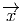 e 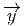 vetores pertencentes ao mesmo espaço vetorial.
Podemos ainda generalizar combinação linear como um produto de matrizes. Dada uma matriz A onde cada
coluna é um vetor que será combinado. Seja C uma matriz com os coeficientes. A combinação linear pode ser
representada como:
A ×B = 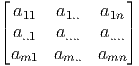 ×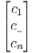 = c1 ×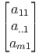 + c
.. ×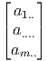 + ... + c
n ×
A saída obtida por um classificador linear pode ser obtida através da seguinte equação. y = f(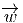⋅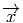) = f ,
onde 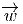 é um vetor com valores reais que representam os coeficientes da combinação linear, geralmente
chamado de pesos do classificador, 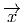 o vetor de características que será avaliado e y o valor escalar resultante
da combinação linear.
,
onde 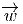 é um vetor com valores reais que representam os coeficientes da combinação linear, geralmente
chamado de pesos do classificador, 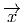 o vetor de características que será avaliado e y o valor escalar resultante
da combinação linear.
III. PERCEPTRON
Um perceptron é um classificador linear. Se dois conjuntos de pontos podem ser separados linearmente
pode-se utilizar o perceptron para fazer a classificação, para tanto é necessário ajustar os pesos para as
sinapses.
O perceptron tem duas limitações. Primeiro, os valores de saída do perceptron podem assumir somente dois
valores (Verdadeiro ou Falso). Segundo, perceptrons somente podem classificar grupos de vetores linearmente
separados, como dito anteriormente. Para realizar a classificação de mais de uma classe é necessário um número
maior de perceptrons, entretanto ainda sim as classes devem ser linearmente separáveis.Na figura 1 temos a
representação de um perceptron. De forma geral, nos neurônios artificiais os seguintes elementos estão
envolvidos:
Conjunto de sinapses (W): Ligações entre neurônios. Cada ligação possui um valor (peso), que representa a
sua força: os estímulos de entrada são multiplicados pelos repectivos pesos de cada ligação, podendo gerar um
sinal tanto positivo (exitatório) quanto negativo (inibitório).
Combinador Linear(): Executa o somatório dos sinais produzidos pelo produto entre os pesos sinápticos e
as entradas fornecidas ao neurônio. Em outras palavras, é o integrador dos sinais que chegam ao
neurônio.
Como pode ser observado o vetor de entrada in(t) possui os seguintes valores (x1, x2, ..., xn). (w1, w2, ..., wn)
representam o respectivo valor do peso do vetor de entrada.
A. Treinamento
O algoritmo de aprendizagem é um método adaptativo em que o perceptron faz os ajustes necessários nos
pesos para se adequar a saída desejada. Isso é feito através da apresentação repetida das n amostras de
treinamento e da correção dos pesos para cada amostra. A correção é feita até que o erro das amostras de
treinamentos seja minimizado. O vetor de entrada é combinado com os pesos e o resultado, um escalar, é
avaliado por uma função degral.
Durante a fase de treinamento o perceptron é acionado por um vetor de entradas 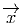(n) onde n representa a
amostra apresentada ao perceptron. O sinal de saída y(n) é calculado pelo perceptron e então comparado com a
saída desejada d(n). Com isso o erro e(n) é para o perceptron é produzido.
O e(n) é utilizado para fazer a correção dos pesos utilizados pelo perceptron. Isso é feito atravéz da
minimização da função de custo, definida em função do erro como:
O ajuste no peso é feito atravéz da regra delta, definida por Widrow-Hoff. Na regra é realizado o ajuste dos
pesos sinápticos w(i), onde i representa o peso do neurônio assiciado a entrada x(i).
O ajuste feito em um peso sináptico de um perceptron é proporcional ao produto do sinal de erro pelo sinal de
entrada da sinapse em questão. De acordo com o valor do peso da conexão podemos verificar se ela é do tipo
inibitória ou excitatória. Caso o valor do peso seja maior que zero a conexão é dita excitatória, caso contrário,
inibitória.
Afim de simplificar os cálculos, é comum fazer a adição do bias ao vetor de pesos e ao vetor de
entrada. Essa versão adicionada de bias é comumente chamada de versão extendida da entrada e dos
pesos.
Tendo como base a figura 1 temos: x é o vetor de entrada, w é o vetor de pesos, θ é o bias e y
é a saída calculada em função dos pesos e da entrada. A saída é calculada usando a seguinte
equação:
| y = f(∑
j=1nx
jwj + θ) | | (4) |
Onde n é o número de entradas, f( T ⋅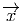) é a função de ativação aplicada na saída calculada,
no perceptron é uma função degral. Como dito anteriormente é comum adicionar o bias ao vetor
de entrada e ao vetor de pesos. O valor adicionado ao bias de entrada neste trabalho foi 1. Com
a versão extendida da entrada e dos pesos o calculo realizado é apenas um produto de matrizes
y = 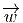T ⋅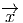.
T ⋅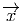) é a função de ativação aplicada na saída calculada,
no perceptron é uma função degral. Como dito anteriormente é comum adicionar o bias ao vetor
de entrada e ao vetor de pesos. O valor adicionado ao bias de entrada neste trabalho foi 1. Com
a versão extendida da entrada e dos pesos o calculo realizado é apenas um produto de matrizes
y = 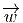T ⋅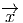.
B. Operador AND, OR e NOT
A base de dados foi criada para os operadores AND, OR e NOT de forma programática. Dado um conjunto de
dados gerados aleatóriamente, os valores das saídas foram calculados de acordo com o operador desejado. Os
detalhes para a contrução da base podem ser verificados na sessão mbox V-Ambox localizada no
Apêndice.
Nesta sessão são exibido os resultados obtidos para o operador lógico AND. A tabela verdade do operador
AND pode ser visualizada na tabela I; Os dados utilizados no treinamento estão expressos na figura
2.
Tabela I: Tabela verdade do operador AND
|
|
|
| x1 | x2 | y |
|
|
|
| 0 | 0 | 0 |
|
|
|
| 0 | 1 | 0 |
|
|
|
| 1 | 0 | 0 |
|
|
|
| 1 | 1 | 1 |
|
|
|
| |
A seguir, figura 3, é exibido o erro quadrático médio obtido durante o treinamento. É exibido
também o erro global, percentual de acerto da época durante o treinamento usando as amostras de
treinamento.
Após o treinamento é possível calcular a região de decisão traçada pelo perceptron, figura 4.
Nesta sessão são exibido os resultados obtidos para o operador lógico OR. A tabela verdade do operador OR
pode ser visualizada na tabela II; Os dados utilizados no treinamento estão expressos na figura
5.
Tabela II: Tabela verdade do operador OR
|
|
|
| x1 | x2 | y |
|
|
|
| 0 | 0 | 0 |
|
|
|
| 0 | 1 | 1 |
|
|
|
| 1 | 0 | 1 |
|
|
|
| 1 | 1 | 1 |
|
|
|
| |
A seguir, figura 6 é exibido o erro quadrático médio obtido durante o treinamento. É exibido também o erro
global, percentual de acerto da época durante o treinamento usando as amostras de treinamento.
Após o treinamento é possível calcular a região de decisão traçada pelo perceptron, figura 7.
Nesta sessão são exibido os resultados obtidos para o operador lógico NOT. A tabela verdade do operador
NOT pode ser visualizada na tabela III; Os dados utilizados no treinamento estão expressos na figura
8.
Tabela III: Tabela verdade do operador NOT
A seguir, figura 9 é exibido o erro quadrático médio obtido durante o treinamento. É exibido também o erro
global, percentual de acerto da época durante o treinamento usando as amostras de treinamento.
Após o treinamento é possível calcular a região de decisão traçada pelo perceptron, figura 10.
Diferentemente dos outros operadores, o operador NOT possui apenas um operando. Isso faz com que a
região de decisão seja apenas uma linha. Na 10 pode-se perceber que para entradas acima de 0.8 os
valores são mapeados para 0 ao contrário dos valores menores que 0.8 que são mapeados para
1.
C. Setosa vs Outras
Este problema consiste em classificar a espécie de Íris Setosa das outras( Íris Virgínica e Íris Versicolor). O
dataset utilizado para o treinamento consiste de 50 amostras de cada uma das três espécies e a
classificação será feita com base nas 4 características disponíveis. Largura e comprimento da pétala e
sépala.
Abaixo, na figura 11 temos a disposição dos dados tendo como característica as larguras da sépala e pétala. A
distribuição de outras características pode ser visualizada na subsessão mbox V-C mbox localizada no
Apêndice.
mbox localizada no
Apêndice.
Foi necessário realizar alguns ajustes nos dado de entrada para que ele possa ser processado pelo perceptron.
Para este problema a classe setosa recebeu o valor 1 como identificador e as outras duas classes receberam o
valor 0. Veja a subsessão mbox V-Bmbox localizada no Apêndice.
Os dados coletados foram separados em duas categorias: dados de treinamento, utilizados para o treinamento
do perceptron e dados de teste, utilizados para verificar sua performance.
Após o treinamento é possível calcular a região de decisão traçada pelo perceptron, figura 12. Os pontos
existentes nesta região são os pontos utilizados como teste.
A acurácia média e o desvio padrão obtido para 100, 50 e 25 repetições são exibidas na tabela IV e V
Percebe-se que com apenas 50% dos dados para treinamento é possível obter-se uma grande taxa de acerto,
cerca de 98%.
Tabela IV: Resultado da acurácia utilizando 20% dos dados para treinamento
|
|
|
| Repetições | Média | Desvio |
|
|
|
| 25 | 0.9938 | 0.0128 |
|
|
|
| 50 | 0.99 | 0.0194 |
|
|
|
| 100 | 0.9909 | 0.0179 |
|
|
|
| |
Tabela V: Resultado da acurácia utilizando 50% dos dados para treinamento
|
|
|
| Repetições | Média | Desvio |
|
|
|
| 25 | 0.9875 | 0.0161 |
|
|
|
| 50 | 0.9875 | 0.0160 |
|
|
|
| 100 | 0.9864 | 0.0182 |
|
|
|
| |
D. Adaline
O Adaline difencia-se do perceptron basicamente pelo não uso da função de ativação. Durante a fase de
aprendizagem o adaline ajusta o pesos de acordo com o erro e o valor da entrada. O Adaline assim como o
perceptron aceita várias entradas e apenas uma saída. Se a diferença entre a saída desejada e o valor calculado
for maior que um dado limiar os pesos das entradas são atualizados. O Adaline tem como principal utilização a
aproximação de funções lineares. Na figura 13 é exibido um comportamento aproximado da seguinte função
f(x) = 3 ×x + 8. Os dados exibidos na figura foram utilizados no treinamento, o qual gerou o gráfico plotado
na figura 14. Na figura 15 é exibido o resultado após o treinamento do Adaline. Vale ressaltar que após o
treinamento os valores dos pesos do Adaline são os coeficientes da função linear aproximada por
ela.
E. Setosa vs Virgínica vs Versicolor
Este problema consiste em classificar as espécie de Íris individualmente, Íris Setosa Íris Virgínica e Íris
Versicolor. O conjunto de dados utilizados é o mesmo utilizado na subsessão mbox III-C mbox .
mbox .
Na figura 11 temos a disposição dos dados tendo como característica as larguras da sépala e pétala. A
distribuição de outras características pode ser visualizada na subsessão mbox V-Cmbox localizada no
Apêndice.
Os ajustes necessários para o treinamento foram feitos no momento que o dataset é carregado pela aplicação.
Desta vez foram utilizados 3 perceptrons fazendo com que a saída desejada seja mapeada da forma exposta na
tabela VI. Veja o Apêndice mbox V-Bmbox para mais detalhes de como é feito o tratamento do
dataset.
Para a solução deste problema serão utilizados 3 perceptrons dispostos de acordo com a figura
16.
Tabela VI: Mapeamento da saída de acordo com a classe da Íris.
|
|
|
|
| Tipo | y1 | y2 | y3 |
|
|
|
|
| Setosa | 1 | 0 | 0 |
|
|
|
|
| Versicolor | 0 | 1 | 0 |
|
|
|
|
| Virgínica | 0 | 0 | 1 |
|
|
|
|
| |
Neste modelo pode-se perceber que os perceptrons são independentes entre si. Cada um, assim como o
problema relatado na subssessão mbox III-Cmbox , é responsável por verificar se aquele dado de entrada
pertence a classe na qual o perceptron foi treinado. Após o treinamento obtemos o seguinte gráfico do erro
quadrático médio.
A acurácia média e o desvio padrão obtido para 100,50 e 25 repetições são exibidas na tabela VII e VIII
Percebe-se que não foi possível obter um resultado melhor que 65 %. Este resultado é esperado tendo em vista
que as classes virgínica e versicolor não podem ser separadas linearmente.
Tabela VII: Resultado da acurácia utilizando 20% dos dados para treinamento das 3 classes de Íris
|
|
|
| Repetições | Média | Desvio |
|
|
|
| 25 | 0.6212 | 0.0767 |
|
|
|
| 50 | 0.6331 | 0.0808 |
|
|
|
| 100 | 0.6431 | 0.0795 |
|
|
|
| |
Tabela VIII: Resultado da acurácia utilizando 50% dos dados para treinamento das 3 classes de Íris
|
|
|
| Repetições | Média | Desvio |
|
|
|
| 25 | 0.6270 | 0.0877 |
|
|
|
| 50 | 0.6247 | 0.0778 |
|
|
|
| 100 | 0.6227 | 0.0807 |
|
|
|
| |
IV. CONCLUSãO
Este trabalho permitiu fazermos uma análise do perceptron e do adaline. Foi percebido ao longo do trabalho a
grande capacidade do perceptron de realizar a separação linear de duas classes. Por parte do adaline
foi dado um exemplo de como se fazer a aproximação de funções lineares dado uma distribuição
de dados. Foi apresentado também o resultado da classificação de 3 classes sendo 2 delas não
separável linearmente, utilizando 3 perceptrons. Foi verificado um resultado não satisfatório para esta
classificação.
V. APêNDICE
A. Gera Base de Treinamento
Abaixo é possível visualizar o código implementado em Matlab para gerar a base de dados para os operadores
AND, OR e NOT. Através do parâmetro tipo é possível selecionar o tipo de base de dados que será gerado. As
opções são AND, OR e NOT. Para a base NOT é importante ressaltar que os valores de X apresentam apenas
uma dimensão. A base de dados gera uma nuvem em torno dos valores 0 e 1 com variação de até 0.2, isso é
feito nos passos da linha 4 à 7. Após a criação da núvem é feita uma operação utilizando os operadores do
matlab.
B. Carrega Dataset
Abaixo é possível visualizar o código implementado em Matlab para carregar os dados da Íris. De acordo
com o valor da variável modo, a saída y, utilizada como saída deseja pelo classificador, é alterada.
C. Características Combinadas para o DataSet da Íris
Abaixo temos as caractéristicas do DataSet da Íris combinados. É fácil perceber que a classe que está
em azul(Setosa) é linearmente separável em praticamente qualquer combinação de características.
Diferentemente das outras duas classes, Versicolor e Vigínica que têm uma região em comum
em várias características principalmente quando relacionamos o comprimento com a largura da
sépala.
D. Implementação do Perceptron
Abaixo é possível visualizar o código implementado em Matlab para executar o treinamento do perceptron.
Está função considera que o bias foi previamente adicionado como se fosse uma característica do dado de
entrada.
E. Exemplo de utilização do Perceptron
Abaixo é possível visualizar o código implementado em Matlab para executar e avaliar o treinamento do
perceptron.
REFERêNCIAS
[1] CS 4793: Introduction to Artificial Neural Networks. Department of Computer Science, University of Texas at San Antonio.
[2] Braga, Antônio de Pádua; Carvalho, André P. L. Ferreira; Ludermir, Teresa Bernarda, "Redes Neurais Artificiais: Teoria e
Aplicações"(2000), Rio de Janeiro: LTC.
[3] HAYKIN, Simon. Redes neurais: princípios e prática. trad. Paulo Martins Engel. -2.ed. - Porto Alegre: Bookman, 2001.
[4] http://users.ics.aalto.fi/ahonkela/dippa/node41.html
[5] http://reference.wolfram.com/applications/neuralnetworks/NeuralNetworkTheory/2.4.0.html
[6] http://www.gsigma.ufsc.br/ popov/aulas/rna/neuronio_artificial/index.html